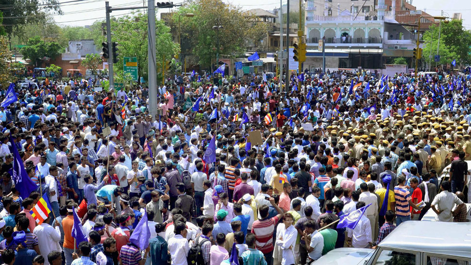
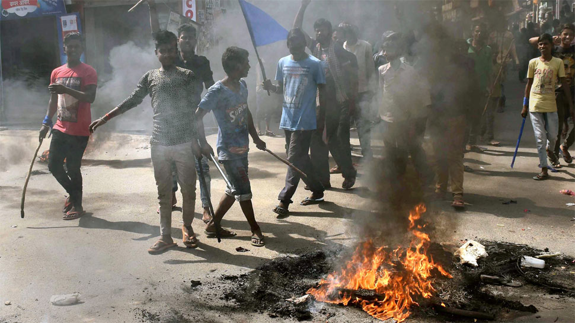

Shivraj Singh Chouhan govt gets HC notice over MoS status to religious leaders

The Madhya Pradesh High Court has issued a notice to the state government over granting Minister of State (MoS) status to five religious leaders. The Shivraj Singh Chouhan government has been asked to respond to the notice within three weeks.
This comes just days after the Bharatiya Janata Party (BJP) government in Madhya Pradesh accorded Minister of State status to five Hindu religious leaders. As per an order of General Administration Department’s additional secretary KK Katiya, the MoS status was accorded to Narmadanand Maharaj, Hariharanand Maharaj, Computer Baba, Bhayyu Maharaj and Pandit Yogendra Mahant.
Assembly elections are due in the state this year, and main opposition Congress dubbed the decision as an attempt by the BJP to exploit the respect these religious leaders enjoy in the society.
“It’s a gimmick to score political points. This is also an effort by the chief minister (Shivraj Singh Chouhan) to wash off his sins. He ignored conservation of the Narmada. These saints should inspect where the state government has planted six crore saplings (along the river banks) as claimed by the CM,” said Congress spokesperson Pankaj Chaturvedi.
State BJP spokesperson Rajnish Agrawal said the opposition party dislikes anything related to saints.
Another Bharat Bandh on April 10? Madhya Pradesh police geared up to tackle the situation

In the last few days, there have been several posts on social media and WhatsApp groups about another Bharat Bandh on April 10. The call for Bharat Bandh has been reportedly given by some groups and organisations opposing caste-based reservations in jobs and education. On April 2, several Dalit groups had enforced a Bharat Bandh in many states to protest against the Supreme Court ruling on the Scheduled Castes/ Scheduled Tribes (Prevention of Atrocities) Act.
Madhya Pradesh Director General of Police (DGP) Rishi Kumar Shukla his force was fully geared up to tackle the Bharat Bandh on April 10. "We are appealing to citizens to maintain peace and harmony in the state. But we are equally prepared to deal with any untoward situation. There may be differences among members of different communities, but they should not resort to violence. Peace and harmony is necessary for the state to prosper," PTI quoted him as saying in Bhopal on Friday.
Meanwhile, the Bharatiya Janata Party (BJP), facing allegations by its rivals of being anti-Dalit, hit back at the opposition parties on Sunday. BJP leaders and Union Ministers Ravi Shankar Prasad and Thawarchand Gehlot counterattacked and blamed Congress president Rahul Gandhi for the violence during the Bharat Bandh on April 2.
Rahul Gandhi mocks religious seers given MoS status by MP govt
New Delhi: Congress president Rahul Gandhi on Thursday recalled a Bollywood hit to mock Madhya Pradesh Chief Minister Shivraj Singh Chouhan and poke fun at a group of 'babas' who had called off a protest after being given a ministerial status by the state government.
Only mama knows where the babas are going, Gandhi said in Hindi on Twitter, taking an unholy dig at Chouhan, who is known as mama - or uncle - in the state.
He used the lyrics of a song from the 1988 Hindi film "Qayamat se Qayamat Tak" - papa kehtey hai (dad said) - to mock the 'babas', the five religious men who had called off their 'Narmada scam yatra' after being accorded the minister of state (MoS) status.
"Baba used to say will do great work, will foil the Narmada scam, but now only 'Mama' (maternal uncle) knows what their final destination is. 'Qayamat se Qayamat tak' (doomsday) in Madhya Pradesh," he tweeted, twisting the lyrics of the song.
He also attached a news item to the post which said the Chouhan government had granted a MoS status to the five seers.
Bharat Bandh: Six dead as Dalit groups clash with police over SC/ST Act

New Delhi: Four people died in Madhya Pradesh and one each died in Uttar Pradesh and Rajasthan on Monday during protests against the Supreme Court order diluting the SC/ST Prevention of Atrocities Act.
The Supreme Court had on March 20, 2018, diluted certain provisions of the Scheduled Caste and Scheduled Tribe (Prevention of Atrocities) Act, in a bid to protect 'honest' public servants discharging bona fide duties from being 'blackmailed' with false cases under the Act.
The verdict is being widely criticised by the Dalits and the Opposition who claim that the dilution of the Act will lead to more discrimination and crimes against the backward community.
While some states ordered the closure of educational institutions and curtailed communication and transport services on Monday, including rail, incidents of arson and vandalism were reported from Madhya Pradesh, Rajasthan, Uttar Pradesh, Bihar and Punjab, among other states.